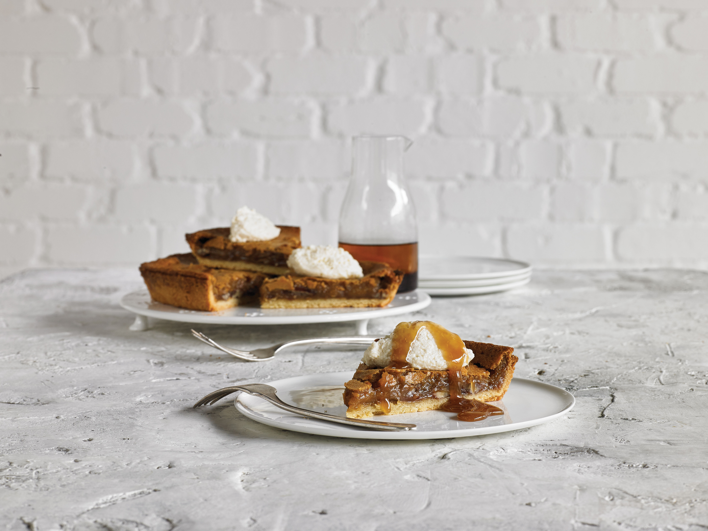

Рецепты к коптильному пистолету BORK Z620

Копченое мороженое с вишней и бурбоном
Время подготовки 20 минут + взбивание / Время приготовления 30 минут
Приготовьте крем за день до приготовления блюда
8–10 порций
- 420 г вишни без косточек, разрезанной пополам, вымоченной в течение 8 часов в виски или «бурбоне». Можно использовать размороженные ягоды, если невозможно найти свежие
- 60 мл виски или «бурбона»
- 500 мл цельного молока
- 400 мл жирных сливок (38% жирности)
- 6 яичных желтков
- 300 г сахара
- 20 г сливочного масла
- 1 ст.л. лимонного сока
- Щепотка соли
- Щепотка щепы для копчения из древесины яблони
- Замочите вишню в виски или «бурбоне» на ночь, примерно на 7–8 часов. Слейте виски, отжимать не нужно.
- В ковше среднего размера нагрейте молоко и сливки до тех пор, пока не пойдет пар.
- Взбейте яичные желтки и 200 г сахара, с добавлением щепотки соли в отдельной миске. Не прекращая взбивания, влейте тонкой струей горячее молоко со сливками. Переложите образовавшийся крем обратно в ковш и продолжайте нагревать на среднем огне. Доведите до температуры 75°С, при постоянном помешивании или до тех пор, пока крем не начнет оставаться на обратной стороне ложки (примерно 20 минут). Переложите крем в большую емкость и накройте сверху полиэтиленовой пленкой.
- Добавьте щепу яблони в камеру сгорания коптильного пистолета. Поместите шланг от коптильного пистолета под полиэтиленовую пленку над кремом. Прикройте пленку.
- Включите коптильный пистолет на Высокой скорости и зажгите древесную щепу. Переключите пистолет на Низкую скорость и наполняйте емкость дымом в течение нескольких секунд, пока внутри емкости не образуется густой дым. Уберите шланг из-под пленки и закройте емкость. Дайте дыму впитаться в течение 5–10 минут. Повторите процесс копчения еще раз, перед этим тщательно перемешав крем.
- Поставьте приготовленный крем в холодильник на ночь.
- Растопите сливочное масло в большой сковороде на среднем огне. Добавьте вишню и тушите до того момента, пока вишня не станет мягкой, приблизительно 8 минут. Добавьте виски или «бурбон», увеличьте нагрев и готовьте в течении 2 минут, пока не испарится алкоголь. Добавьте оставшийся сахар и сок лимона. Убавьте нагрев до среднего значения и продолжайте готовить в течении 5-8 минут, одновременно разминая вишни, чтобы высвободить сок. Слейте образовавшийся сок из сковороды в отдельную емкость. Поставьте сок и вишню в холодильник.
- Переложите охлажденный крем из холодильника в Мороженицу BORK E801 и приготовьте мороженое, согласно инструкции производителя.
- Добавьте сок вишни и ягоды в мороженицу за 1 минуту до окончания цикла, чтобы получить «мраморный эффект».
- Заморозьте смесь в морозилке до твердого состояния.

Копченый джем из перца чили
Время подготовки 15 минут / Время приготовления 65 минут
Для 300 г продукта
- 100 г средних перцев чили, крупно нарезанных
- 2 зубчика чеснока, нарезанного
- 5 см корня имбиря, очищенного и нарезанного
- 4 помидора, крупно нарезанного
- 125 мл белого винного уксуса
- 110 г сахара
- ¼ ч.л. молотой гвоздики
- ¼ ч.л. молотого мускатного ореха
- 2 ч.л. рыбного соуса
- Соль морская, по вкусу
- Щепотка щепы из ольхи
- Положите перец чили, чеснок и имбирь в чашу кухонного комбайна и перемелите до однородной массы.
- Переложите получившуюся массу в средний сотейник вместе с помидорами, уксусом, сахаром, специями и рыбным соусом. Доведите смесь до кипения при высокой степени нагрева. Уменьшите нагрев до слабого и готовьте 45–50 минут или до тех пор, пока смесь не станет липкой. Продолжайте готовить 10–15 минут, периодически помешивая, чтобы предотвратить пригорание.
- Перелейте смесь в чистую емкость и закройте пластиковой пленкой. Добавьте щепу ольхи в камеру сгорания коптильного пистолета. Поместите шланг от коптильного пистолета под полиэтиленовую пленку над джемом. Прикройте пленку. Включите коптильный пистолет на Высокой скорости и зажгите древесную щепу. Переключите пистолет на Низкую скорость и наполняйте емкость дымом в течение нескольких секунд, пока внутри емкости не образуется густой дым. Уберите шланг из-под пленки и закройте емкость. Дайте дыму впитаться в течение 3 минут. Повторите процесс копчения еще раз, перед этим тщательно перемешав джем. Оставьте джем до полного остывания. Джем может храниться в холодильнике 2–3 недели.
Предложения по сервировке
- Смажьте 2 кг куриных крыльев двумя столовыми ложками оливкового масла. Посыпьте солью и перцем. Тщательно перемешайте.
- Разогрейте духовку до 180°С и готовьте куриные крылья в течение 35–40 минут или до тех пор, пока они не подрумянятся.
- Подавайте крылья с копченым джемом из перца чили.
Для более интенсивного запаха дыма закоптите куриные крылья перед подачей на стол.

Копченый чесночный соус «АЙОЛИ»
Время подготовки 10 минут / Время приготовления 25–30 минут
Для 250 мл продукта
- 1 целая головка чеснока
- 1 ст.л. оливкового масла
- 2 яичных желтка
- 1 ч.л. дижонской горчицы
- 200 мл оливкового масла Extra Virgin
- 2 ст.л. лимонного сока
- Соль и перец по вкусу
- Щепотка щепы из ольхи
- Разогрейте духовку до 180°С.
- Возьмите кусок алюминиевой фольги размером 15×15 см, поставьте на нее головку чеснока, сбрызните оливковым маслом, добавьте соль и перец. Заверните фольгу, чтобы полностью закрыть чеснок.
- Запекайте чеснок в течение 25–30 минут или пока он не станет мягким.
- Выньте зубчики запеченного чеснока из кожуры.
- Чтобы приготовить «Айоли», поместите в чашу блендера яичные желтки и дижонскую горчицу. Взбивайте на высокой скорости до образования однородной массы. Установите блендер на самую низкую скорость и тонкой струйкой вливайте оливковой масло Extra Virgin; дождитесь, пока смесь не загустеет. После этого добавьте печеный чеснок и лимонный сок. Продолжайте взбивать до образования однородной массы.
- Переложите соус «Айоли» в чистую емкость и закройке полиэтиленовой пленкой. Добавьте щепу ольхи в камеру сгорания коптильного пистолета. Поместите шланг от коптильного пистолета под полиэтиленовую пленку над соусом. Прикройте пленку.
- Включите коптильный пистолет на Высокой скорости и зажгите древесную щепу. Переключите пистолет на Низкую скорость и наполняйте емкость дымом в течение нескольких секунд, пока внутри емкости не образуется густой дым. Уберите шланг из-под пленки и закройте емкость. Дайте дыму впитаться в течение 3 минут. Повторите процесс копчения еще раз, перед этим тщательно перемешав соус. Закройте емкость и уберите в холодильник. Можно подавать с картофелем фри.

Копченое масло с перцем чили
Время подготовки 10 минут
Для 150 г продукта
- Копченое масло с перцем чили
- 125 г размягченного сливочного масла
- 2 зубчика чеснока, нарезанного
- 4 больших зеленых перца чили, без семян и крупно нарезанного
- 2 ст.л. зелени кинзы, нарезанной
- Цедра лайма
- Морская соль по вкусу
- Щепотка щепы из бука
- Растопите 10 г масла на сковороде, на среднем огне. Добавьте чеснок, перец чили и готовьте до мягкости. Переложите массу в чашу блендера вместе с другими ингредиентами и перемешайте до получения однородной массы.
- Переложите массу в чистую емкость и закройке полиэтиленовой пленкой. Добавьте щепу бука в камеру сгорания коптильного пистолета. Поместите шланг от коптильного пистолета под полиэтиленовую пленку над маслом. Прикройте пленку. Включите коптильный пистолет на Высокой скорости и зажгите древесную щепу. Переключите пистолет на Низкую скорость и наполняйте емкость дымом в течение нескольких секунд, пока внутри емкости не образуется густой дым. Уберите шланг из-под пленки и закройте емкость. Дайте дыму впитаться в течение 3 минут.
- Отрежьте примерно 30 см бумаги для выпечки, выложите масло на бумагу и скатайте ролл. Заверните края бумаги и уберите в холодильник для застывания. Масло может храниться до 2-х недель.
Копченое масло с помидорами
Время подготовки 10 минут
Для 150 г продукта
- 125 г размягченного сливочного масла
- 50 г вяленых помидоров
- 30 г жареных кедровых орехов
- 2 ст.л. базилика, нарезанного
- Морская соль по вкусу
- Щепотка щепы из яблони
- Поместите масло, помидоры, кедровые орехи и базилик в чашу блендера. Размелите в блендере, чтобы остались кусочки. Посолите.
- Повторите шаги 2 и 3 из рецепта «Копченое масло с перцем чили».
Копченое масло с анчоусамии
Время подготовки 10 минут
Для 150 г продукта
- 125 г сливочного масла, размягченного
- 20 г анчоусов, без жидкости
- 2 ст.л. петрушки, нарезанной
- Цедра половины лимона
- Морская соль по вкусу
- Щепотка щепы из бука
- Поместите масло, анчоусы, цедру и петрушку в чашу блендера. Размелите в блендере, чтобы остались кусочки. Посолите.
- Повторите шаги 2 и 3 из рецепта «Копченое масло с перцем чили».

Коктейль «УТРЕННИЙ ТУМАН»
Время приготовления 10 минут
1 порция
- 60 мл коньяка
- 20 мл ликера
- «Куантро»
- 20 мл лимонного сока
- 10 мл сиропа
- ½ чашки кубиков льда
- Щепотка раздробленного черного перца (не молотый)
- Сахар, для украшения
- Щепотка щепы из бука
- Щепотка щепы из яблони
- Чтобы получить сахар с запахом дыма, насыпьте сахар в емкость и накройте пленкой. Добавьте щепу яблони в камеру сгорания коптильного пистолета.
- Поместите шланг от коптильного пистолета под полиэтиленовую пленку над сахаром. Прикройте пленку. Включите коптильный пистолет на Высокой скорости и зажгите древесную щепу. Переключите пистолет на Низкую скорость и наполняйте емкость дымом в течение нескольких секунд, пока внутри емкости не образуется густой дым. Уберите шланг из-под пленки и закройте емкость. Дайте дыму впитаться в течение 3 минут, периодически встряхивая емкость с сахаром.
- Охладите бокал для коктейля. Непосредственно перед подачей коктейля, окуните края бокала в копченый сахар. Отставьте в сторону.
- Для приготовления коктейля, смешайте коньяк и ликер, лимонный сок, сироп и лед в коктейльном шейкере. Добавьте щепу бука и раздробленный черный перец в камеру сгорания коптильного пистолета. Поместите шланг от коптильного пистолета под крышку шейкера над коктейлем. Прикройте крышку. Включите коптильный пистолет на Высокой скорости и зажгите древесную щепу.
- Переключите пистолет на Низкую скорость и наполняйте емкость дымом в течение нескольких секунд, пока внутри емкости не образуется густой дым. Уберите шланг из-под крышки и закройте шейкер. Аккуратно перемешайте коктейль или взболтайте его.
- Вылейте в охлажденный бокал, украшенный сахаром.

Коктейль «КРОВАВАЯ МЭРИ» с запахом дыма сельдереем и копченым беконом
Время приготовления 10 минут
1 порция
Для копченого бекона:
- 2 кусочка бекона с прослойками жира
- Щепотка щепы из бука
Для «Кровавой Мери» с запахом дыма:
- 250 мл густого томатного сока
- 125 мл водки
- 1 ст.л. лимонного сока
- ¼ ч.л. соуса «Табаско»
- 1 ч.л. соуса «Ворчестшир»
- ½ ч.л. соли с сельдереем
- ½ чашки кубиков льда
- Кусок стебля сельдерея и копченый бекон, для украшения
- Молотый черный перец для украшения
- Щепотка щепы из яблони
- Разогрейте духовку до 180°С.
- Поместите бекон на металлическую решетку внутри противня.
- Готовьте бекон в течение 10–15 минут или до образования румяной корочки.
- Охладите в течение 5 минут на решетке, после этого поместите в контейнер, выложенный бумагой для выпечки.
- Закройте контейнер полиэтиленовой пленкой. Добавьте щепу бука в камеру сгорания коптильного пистолета. Поместите шланг от коптильного пистолета под полиэтиленовую пленку над беконом. Прикройте пленку. Включите коптильный пистолет на Высокой скорости и зажгите древесную щепу. Переключите пистолет на Низкую скорость и наполняйте емкость дымом в течение нескольких секунд, пока внутри емкости не образуется густой дым. Уберите шланг из-под пленки и закройте емкость. Дайте дыму впитаться в течение 3 минут.
- Для приготовления «Кровавой Мери» смешайте в коктейльном шейкере томатный сок, водку, лимонный сок, соус «Тобаско», соус «Ворчестшир» и соль с сельдереем вместе со льдом.
- Добавьте щепу яблони в камеру сгорания коптильного пистолета. Поместите шланг от коптильного пистолета под крышку шейкера над коктейлем. Прикройте крышку. Включите коптильный пистолет на Высокой скорости и зажгите древесную щепу. Переключите пистолет на Низкую скорость и наполняйте емкость дымом в течение нескольких секунд, пока внутри емкости не образуется густой дым. Уберите шланг из-под крышки и закройте шейкер. Интенсивно взболтайте его в течении 10 секунд.
- Налейте коктейль в бокалы и подавайте с черным перцем, стеблем сельдерея и копченым беконом.
Хрустящая копченая куриная грудка с соусом «АЙОЛИ» из перца халапеньо
Время подготовки 10 минут + маринование / Время приготовления 6–10 минут
4 порции
Куриная грудка:
- 2×200 г куриной грудки, разрезанной вдоль
- 250 мл кефира
- 250 мл растительного масла для обжарки
- 150 г муки
- 1 ч.л. пищевой соды
- 1 ч.л. кайенского перца
- 1 ч.л. сладкой паприки
- 1 ч.л. лукового порошка
- 1 ч.л. чесночного порошка
- 1 ч.л. соли
Соус «Айоли» из перца халапеньо:
- 60 г соуса «Айоли»
- 1 ч.л. перца халапеньо, нарезанного
- Щепотка щепы из ольхи
Для сервировки:
- 4 листа кочанного салата
- 4 куска сыра чеддер
- Маринованный огурец, нарезанный кольцами
- 4 булочки для гамбургеров, разрезанные пополам
- Поместите куриную грудку в чашу и залейте кефиром. Закройте чашу полиэтиленовой пленкой. Добавьте щепу ольхи в камеру сгорания коптильного пистолета. Поместите шланг от коптильного пистолета под полиэтиленовую пленку над кефиром. Прикройте пленку. Включите коптильный пистолет на Высокой скорости и зажгите древесную щепу. Переключите пистолет на Низкую скорость и наполняйте емкость дымом в течение нескольких секунд, пока внутри емкости не образуется густой дым. Уберите шланг из-под пленки и закройте емкость. Уберите в холодильник на ночь (или минимум 8 часов).
- Чтобы приготовить соус «Айоли» с перцем халапеньо, положите соус и нарезанный перец в чашу и тщательно перемешайте до получения однородной массы. Закройте чашу полиэтиленовой пленкой. Добавьте щепу ольхи в камеру сгорания коптильного пистолета. Поместите шланг от коптильного пистолета под полиэтиленовую пленку над соусом. Прикройте пленку. Включите коптильный пистолет на Высокой скорости и зажгите древесную щепу. Переключите пистолет на Низкую скорость и наполняйте емкость дымом в течение нескольких секунд, пока внутри емкости не образуется густой дым. Уберите шланг из-под пленки и закройте емкость. Дайте дыму впитаться в течение 3 минут.
- Положите на противень для выпечки бумажное полотенце и отставьте в сторону.
- Разогрейте масло в глубокой сковороде до температуры 180°С или до тех пор, пока при погружении ложки, масло не начнет пузыриться.
- В чистую широкую емкость поместите муку, пищевую соду, кайенский перец, сладкую паприку, луковый порошок, чесночный порошок, соль и перемешайте до однородной панировочной массы. Достаньте курицу из холодильника, дайте стечь кефиру, обваляйте в панировочной массе и жарьте в течение 3–5 минут до образования румяной корочки и готовности, периодически переворачивая. Положите приготовленную курицу на противень для выпечки.
- Намажьте нижнюю половину булочки соусом «Айоли» с перцем халапеньо. Положите сверху приготовленную куриную грудку, накройте листом кочанного салата, куском сыра чеддер и маринованными огурцами.
Приготовленный соус «Айоли» с перцем халапеньо может храниться в холодильнике до 2 недель.
Копченый пирог с орехом пекан кленовым сиропом и кремом из сыра рикотта
Время подготовки 20 минут + 50 минут для остывания выпечки
Время приготовления 55–60 минут
8 порций
Выпечка:
- 250 г муки
- 2 ст.л. сахара
- 125 г несоленого масла, порезанного кусочками
- 1 яичный желток
- 2–3 ст.л. ледяной воды
- 200 г коричневого сахара
- 250 мл жирных сливок (38% минимум)
- 35 г просеянной муки
- 80 мл кленового сиропа
- 200 г орехов пекан
Крем из сыра рикотта:
- 250 г сыра рикотта
- 60 г сахара для украшения
- 1 ч.л. молотой корицы
- Щепотка щепы из яблони
- Для приготовления теста, поместите муку, сахар и сливочное масло в чашу блендера или кухонного процессора. Не выключая процессор, добавьте яичный желток и воду и продолжайте перемешивание, пока тесто не будет однородным и не скатается в шар. Выключите процессор, выньте тесто и положите на пленку. Уберите тесто в холодильник на 20 минут.
- Разогрейте духовку до 180°С. Раскатайте тесто до толщины 5 мм и достаточного размера, чтобы закрыть форму для выпечки. Выложите тесто в форму, излишки теста обрежьте. Уберите в морозилку на 30 минут.
- Проколите тесто по всей поверхности вилкой. Положите сверху бумагу для выпечки и выложите груз для выпечки песочного теста. Выпекайте в течение 10 минут на нижней решетке духовки. Выньте форму из духовки, уберите груз и бумагу. Дайте полностью остыть.
- Для приготовления начинки пирога положите коричневый сахар, сливки, муку и ¼ чашки кленового сиропа в среднюю чашу. Перемешивайте.
- Разложите орехи по поверхности основы пирога равномерным слоем. Сверху залейте начинкой. Выпекайте в течение 30–35 минут. Дайте полностью остыть.
- Смешайте вместе сыр рикотту, сахар и молотую корицу в средней чаше. Закройте чашу полиэтиленовой пленкой. Добавьте щепу яблони в камеру сгорания коптильного пистолета. Поместите шланг от коптильного пистолета под полиэтиленовую пленку над рикоттой. Прикройте пленку. Включите коптильный пистолет на Высокой скорости и зажгите древесную щепу. Переключите пистолет на Низкую скорость и наполняйте емкость дымом в течение нескольких секунд, пока внутри емкости не образуется густой дым. Уберите шланг из-под пленки и закройте емкость. Дайте дыму впитаться в течение 3 минут.
- Налейте кленовый сироп в кувшин. Закройте кувшин полиэтиленовой пленкой. Добавьте щепу яблони в камеру сгорания коптильного пистолета. Поместите шланг от коптильного пистолета под полиэтиленовую пленку над сиропом. Прикройте пленку. Включите коптильный пистолет на Высокой скорости и зажгите древесную щепу. Переключите пистолет на Низкую скорость и наполняйте емкость дымом в течение нескольких секунд, пока внутри емкости не образуется густой дым. Уберите шланг из-под пленки и закройте емкость. Дайте дыму впитаться в течение 3 минут, периодически взбалтывая сироп.
- Выложите на пирог рикотту и полейте сверху кленовым сиропом.

Копченые свиные ребрышки с салатом колеслоу
Время подготовки 30 минут / Время приготовления 90 минут
4 порции
Маринад:
- 1 ст.л. оливкового масла
- 1 небольшая красная луковица, нарезанная
- 2 зубчика чеснока, раздавленного
- 250 мл виски
- 1 ст.л. паприки
- 1 ст.л. коричневого сахара
- 2 ст.л. соуса «Ворчестшир»
- 400 г помидоров в собственном соку
- Щепотка щепы из бука
- 2 кг свиных ребрышек
Салат колеслоу:
- 400 г белокочанной капусты, мелко нашинкованной соломкой
- 100 г зеленого яблока, очищенного и нарезанного соломкой
- 2 пера зеленого лука, мелко нарезанного
- 60 г соуса «Айоли»
- Соль и перец по вкусу
- 1 ч.л. семян черного кунжута
- Разогрейте духовку до 160°С.
- Для приготовления маринада в средней кастрюле разогрейте масло на среднем огне. Добавьте красный репчатый лук и чеснок и готовьте, помешивая, в течение 2–3 минут или до того момента, пока лук не станет мягким. Добавьте виски и доведите до кипения. Добавьте паприку, коричневый сахар, соус «Ворчестшир» и нарезанные помидоры и продолжайте готовить 15–20 минут или до того момента, пока смесь не загустеет. Охладите. Переложите смесь в блендер и взбивайте, пока смесь не станет однородной.
- Выложите свиные ребрышки на противень для запекания, смажьте половиной маринада, накройте фольгой и готовьте 1 час или пока мясо не станет мягким.
- Переложите оставшуюся половину маринада в чистую емкость и накройте полиэтиленовой пленкой.
- Добавьте щепу бука в камеру сгорания коптильного пистолета. Поместите шланг от коптильного пистолета под полиэтиленовую пленку над маринадом. Прикройте пленку. Включите коптильный пистолет на Высокой скорости и зажгите древесную щепу. Переключите пистолет на Низкую скорость и наполняйте емкость дымом в течение нескольких секунд, пока внутри емкости не образуется густой дым. Уберите шланг из-под пленки и закройте емкость. Дайте дыму впитаться в течение 3 минут. Уберите в холодильник.
- Разогрейте духовку до 200°С.
- Удалите фольгу с поддона для запекания и подрумяньте ребрышки в течение 30 минут, смазывая периодически маринадом.
- Для более интенсивного запаха дыма накройте поддон фольгой и еще раз закоптите перед подачей.
- Для салата смешайте все ингредиенты, кроме семян кунжута в чаше, и приправьте.
Украсьте сверху семенами кунжута и подавайте вместе с ребрышками.